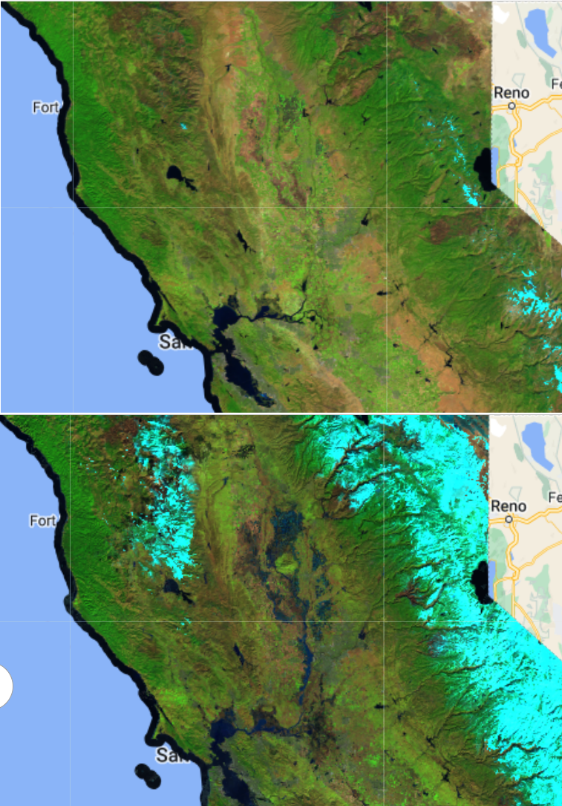

Transmission Line Inspector
I built a tool for my employer to visualize potential tree strike areas and inspect tree health along high-voltage power lines. The tool employs 360 degree equirectangular imagery displayed via ESRI’s new Oriented Imagery viewer in ArcGIS Online. Trees identified as potential hazards can be inspected by the client from multiple viewpoints in order to ascertain whether field inspection was warranted. - link -

Redistricting Plan Scorer to Compare Compactness, Contiguity, Partisan Fairness, and Population Equality
Our team built a tool to score proposed congressional redistricting plans on several state legislature and Constitutionally-mandated criteria, including population equality, compactness, and partisan fairness. I coded the GUI in pyQT and was responsible for the partisan fairness tests. - link-
Analysis of Atmospheric River Effects in California 2023 Using LANDSAT and Sentinel-1
I studied the effects of an “atmospheric river” in early 2023 that left at least 23 people dead in California. The analysis was conducted using python, geemap, and jupyter notebook. Normalized Difference Water Index (NDWI) using LANDSAT imagery and Synthetic Aperture Radar (SAR) data from Sentinel-1 were used to calculate standing water left by the event. - link -
Machine Learning Land-use Classification in scikit-learn
I created satellite imagery labels and and trained a machine learning model to classify land use in Baltimore. In this first iteration, the goal was to distinguish between high and medium density residential housing. - link -
Using Building Renovation Permit Applications as Leading Indicators for Property Crimes
In another analysis, I looked for correlations between the number of building renovation permits filed with the Bureau of Licenses and Inspections and the frequency of reported property crimes in several South Philadelphia neighborhoods. I was interested to see whether permits could be used as a leading indicator. - link -
Predicting the Alabama State Constitutional Amendment Vote
In another project, I built a multivariable regression model in R to predict the election outcome of a ballot initiative that amended the Alabama State Constitution. - link -
Demonstrating K-Means Clustering with Behavioral Risk Factor Surveillance System and CDC Gun Death Data
As part of a student-led tutorial, I demonstrated the implementation and optimization of K-Means clustering using BRFSS and CDC gun death data. Rates of gun ownership closely correlate with gun deaths.Pictured are 4 clusters of states. An interesting follow-up question is whether the clusters have similar levels of firearm regulation. - link -